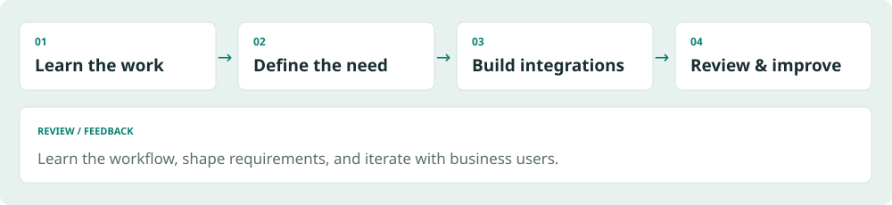

PROFILE
01 / 24Turning ambiguous business needs into working systems
I learn how teams work, identify bottlenecks, and connect the people, data, and tools needed to solve them. My work spans renewable-energy operations, reporting automation, feasibility assessment, and AUDPlatform workflows for sales opportunities, contracts, orders, and weekly meetings.

Start by learning the work
Requirements did not arrive as complete specifications. I learned how operations teams checked plants, how business development assessed sites, and how business support reviewed financial assumptions. The user's actual task shaped the implementation scope.
Connect implementation to use
My work connects external data collection, normalization, email and attachment processing, database ingestion, business interfaces, and mobile access. I review the result myself and refine it with feedback from business users.
Roles I am pursuing
For AI-enabled workflow improvement (AX), I emphasize recurring work and where human review belongs. For forward-deployed engineering (FDE), I emphasize translating unclear requests into integrations that work within existing constraints. These are target roles, not current job titles.
Reading this portfolio
The three main cases cover operations monitoring, reporting automation, and address-based feasibility assessment. All diagrams and example screens are newly created illustrations using synthetic data. Operational status follows the project owner's account; implementation claims follow source and document review, not an independent production re-test.